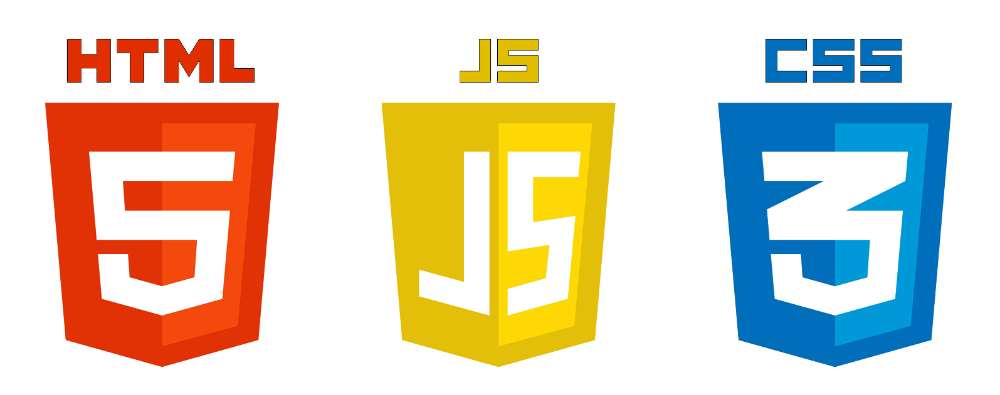
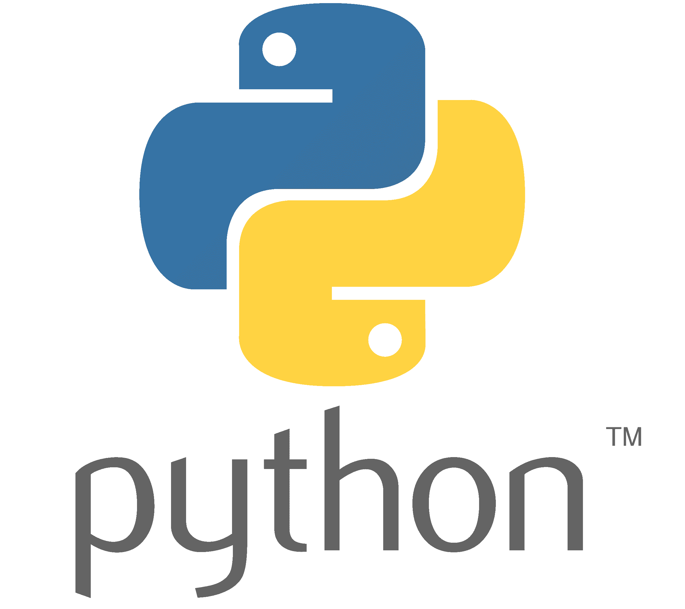
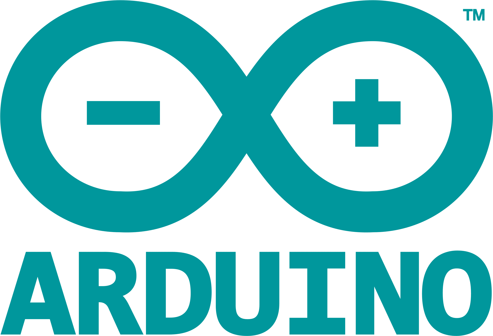
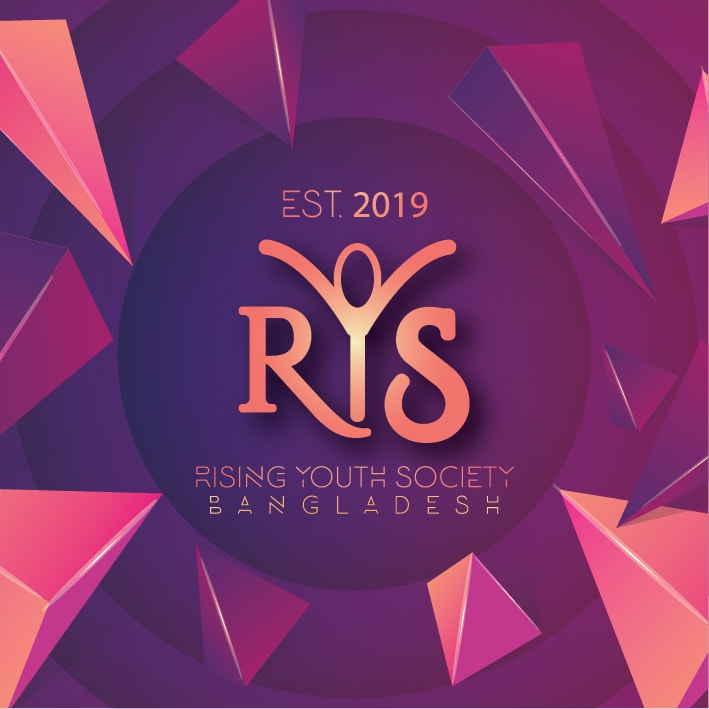
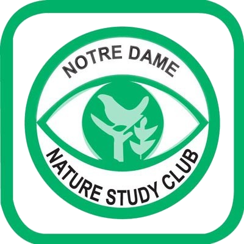
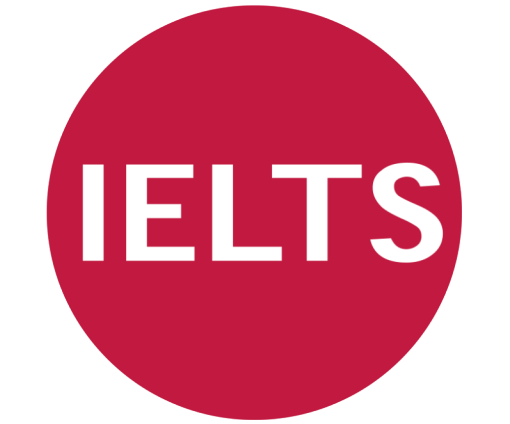
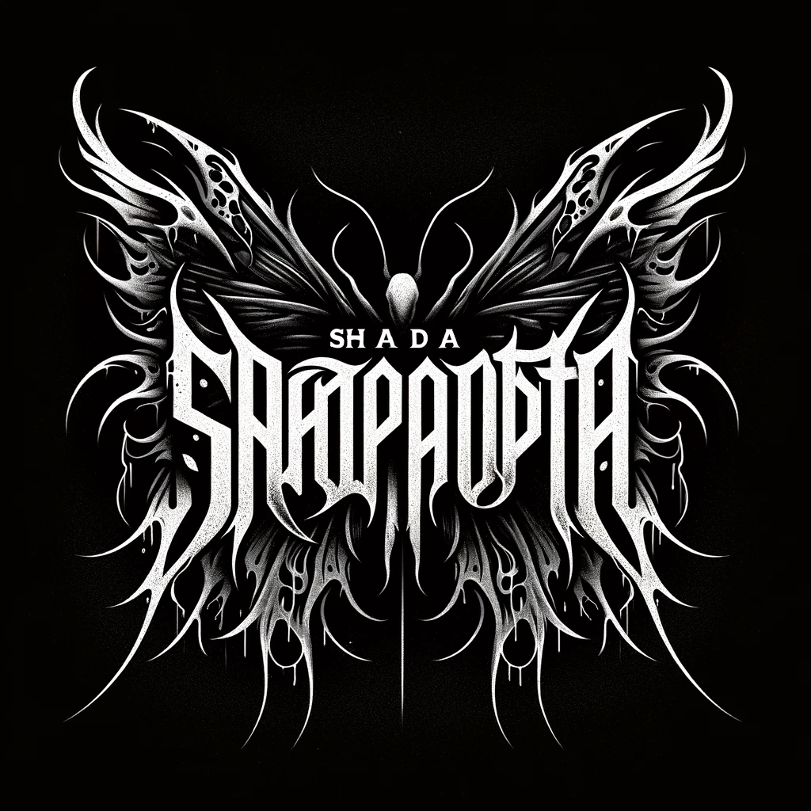
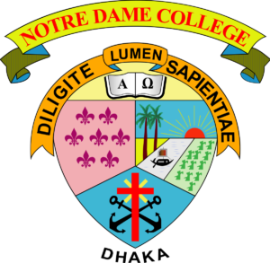
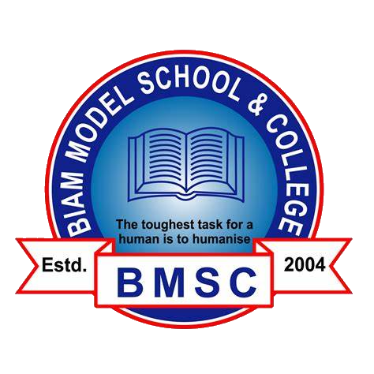

Arian Islam
Programmer
Skills
Web Development

Data Science and Software Development



Other Languages

Other Skills
- Communication
- Flexibility
- Team Management

- Problem Resolution
| Work Experience |
2019-2022 Events and Archive Management, Volunteering Vice President(Archive and Logistics) Rising Youth Society 2020-2022 Event Volunteering Notre Dame Nature Study Club Notre Dame College 2023 Private IELTS Tutoring Number of Students Taught: 6 2023 Private Python Course Class Size: 6 2022-2023 Guitarist and Composer Band: Shada Projapoti |
| Education |
Bachelor of Advanced Computing (majoring in Computer Science) University of Sydney 2020-2022 Higher Secondary Certificate (HSC) Division: Science Notre Dame College Result: GPA 5.00/5.00 2018-2020 Senior Secondary Certificate (SSC) Division: Science BIAM Model School and College Result: GPA 5.00/5.00 |